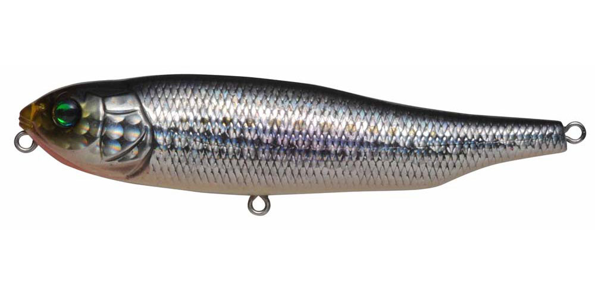
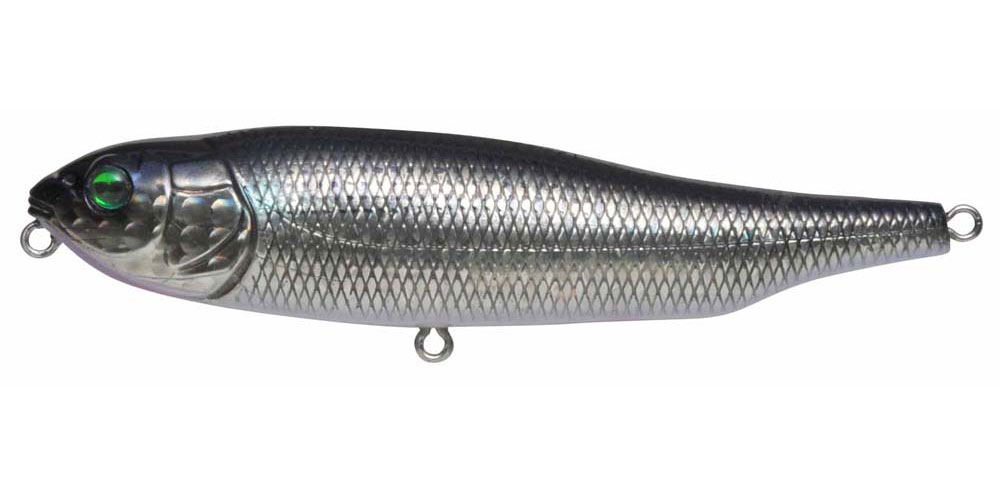
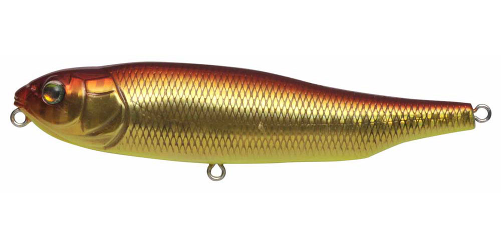
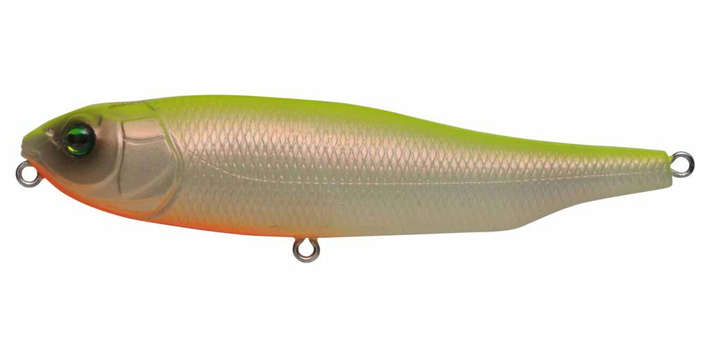

ジャイアントドッグX SW
（GIANT DOG-X SW）
ジャイアントドッグX SWは、メガバスのソルト専用ペンシルベイトです。
ヒラ打ちを伴ったローリング・ドッグウォークで、逃げ惑う小魚のような強烈なフラッシングとスプラッシュを出す「リアルインパクト・ペンシル」。98mm・16.5gで、ソルト用に重さを増やして飛距離もアップしています。

画像出典:メガバス公式HP
スペック
- メーカー
- Megabass（メガバス）
- 全長
- 98mm
- 自重
- 16.5g
- タイプ
- フローティング
- フック
- #4×2
- カラー
- 全8色
- ターゲット
- シーバス・青物
- 価格
- 1,850円（税抜）
▼今すぐチェック

ジャイアントドッグX SWの特徴
ヒラ打ちとスプラッシュで魚を食わせる、ソルト専用のリアルインパクト・ペンシル
-
ヒラ打ちを伴うローリング・ドッグウォーク
首を振るたびに体を大きくヒラ打ちさせ、強いフラッシングを出す。ボディのハイドロギルがターンのたびに水面を切り裂き、サウンドとスプラッシュを発生させる。
-
波のある海面でも破綻しないウェイト設定
ソルトウォーター専用のウェイト設定で、波がある海面でもロッドワークにしっかり反応する。高速でドッグウォークさせても水面から飛び出さず、ヒラ打ちとスプラッシュを出し続ける。
-
重さを増やして飛距離アップ
ソルト用に重さを増やしたことで、飛距離が一段とアップ。沖で起きるナブラにも届きやすい。
ジャイアントドッグX SWの使い方
キャストしたら、ロッドを小刻みに動かしながらリールを巻いて、首を左右に振るドッグウォークをさせるのが基本です。
テンポよく動かすとヒラ打ちのフラッシングとスプラッシュが出ます。ナブラが出ているときは、速めのドッグウォークで逃げる小魚を演出しましょう。
ジャイアントドッグX SWの得意な状況
シーバスや青物が水面で小魚を追っているときや、朝夕のマズメにナブラ・ボイルが出る場面で出番です。
ヒラ打ちのフラッシングとスプラッシュで、やる気のない魚にもスイッチを入れて食わせられるのが強みで、ナブラ打ちでもよく釣れるペンシルです。
ワンポイント
波がある日は、ラインスラッグ（糸ふけ）を少し残して、ロッドで弾くように動かすとアクションが安定します。テンポを変えながら、魚が反応する速さを探しましょう。
人気カラー
ジャイアントドッグX SWの人気カラーを紹介します。

GG IWASHIイワシを食べている時の定番カラー。

GG INAKKOイナッコ（ボラの幼魚）パターンの河口や港に。

GG AKA KIN赤と金のアピールカラー。朝夕のマズメやにごりに。

PM HOT SHAD目立つ色で、遠くの魚にも気づかせたい時に。
画像出典:メガバス公式HP
▼今すぐチェック
ジャイアントドッグX SWに似ているルアー
-
 モアザン トリックアッパー R
ダイワ
詳細はこちら＞
モアザン トリックアッパー R
ダイワ
詳細はこちら＞
カップ付きのトップペンシル。ラトル音とスプラッシュで寄せたい時に。
-
 ズバット105F
パズデザイン
詳細はこちら＞
ズバット105F
パズデザイン
詳細はこちら＞
高浮力のトップウォーターペンシル。シーバスやチヌを水面で狙う時に。
-
 プガチョフコブラ60
アイマ
詳細はこちら＞
プガチョフコブラ60
アイマ
詳細はこちら＞
小さなトップウォーター。小さなベイトに合わせたい時に。